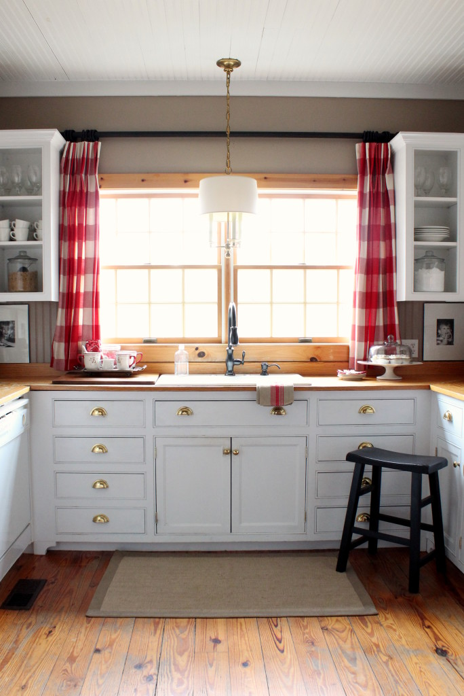
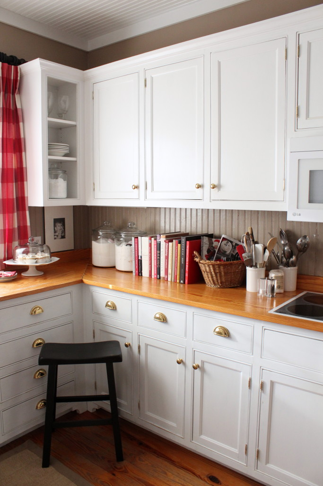
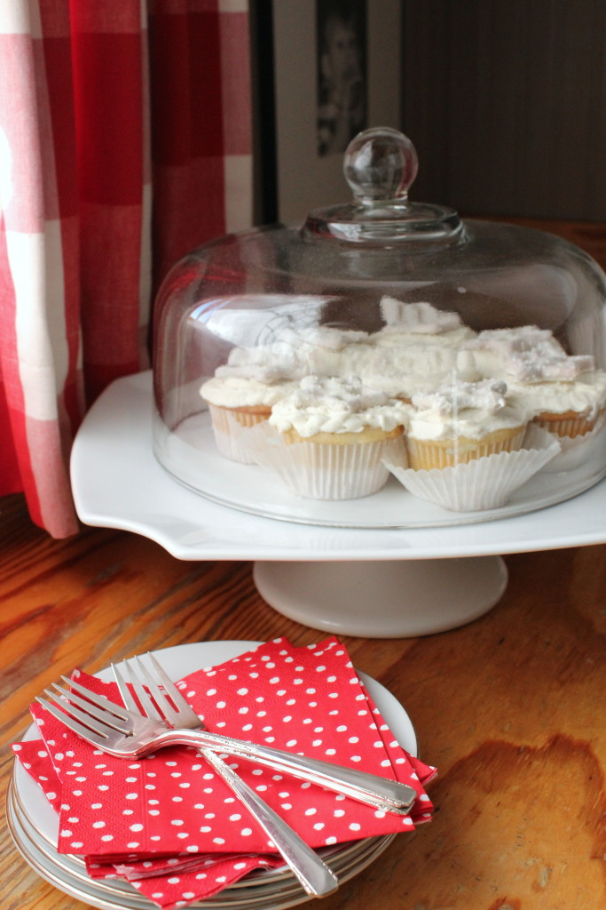

.png)
.PNG)
.PNG)
.PNG)
.PNG)
.PNG)
.JPG)
.JPG)
.PNG)
.PNG)


No, not that storm…that winter snowstorm that is about to visit so many of you on this side of the country and give you tons of snow.
We’re not getting any of that (except for buckets of rain today and lots of wind tomorrow.)
I’m talking about a different kind of storm.
 I had to show you the kitchen before the storm of baking that I have to do today messes it up big time.
I had to show you the kitchen before the storm of baking that I have to do today messes it up big time.
It’s going to be a while before it is this clean and neat again.
Because all this baking that I have to do?
It’s major.
How major?
You’re asking, right?
Well…how about 18 dozen cookies and 2 cakes?
(Not to mention all the little sandwiches that have to be prepared too.)
It’s for a secret project that has had me making list after list and checking them twice in the last week.
Truly.
(And no it is not a book or magazine photoshoot, so don’t go thinking it is that. 🙂 )
Right now, my workroom is a HUGE disaster with ribbons, balloons, floral supplies, bottled drinks, clipboards and boxes of photographs on the counter. (Not to mention half a dozen pillows strewn on the floor.) Sorry… no photo of that.
And I snapped these photos of the kitchen before all the chocolate chips, coconut, pecans, mayonnaise, and candy placed themselves on the counter in there.
So it is going to smell heavenly in the kitchen today 🙂 …
and I am sure there will be some taste testing going on. 🙂
But it is going to be a mess…a big BIG mess!
I hope to share it with you next week, (the project…not the mess LOL) but for now, I am sharing the nice clean kitchen with the winter-for-January and red-for-Valentine’s Day decorating with you. And no, I am afraid I did not make the cute mitten cookies. They actually came from Books-a-Million’s little cafe. (Who would of thought?!)
I have one last run to Wal-mart to pick up a few things, and then it is time to start the baking. That will be followed by some decorating! Yay! So I will be off the computer until Monday.
I hope you have a safe and cozy weekend…especially those of you who are in for the snowstorm. Stay warm! I’ll be back next week with all the details on our secret project. 🙂
Until next time….


.PNG)
Love the Buffalo Check curtains! Please tell me you didn’t make them so I can order them myself!
Hi Kelly,
Have you ever written a blog post about Asheville, NC? We are planning a weekend get-a-way, and I thought to myself, I bet Kelly has been there!!
———————————————————————–
Stacey, we have not been to Asheville in almost 30 years, so I am afraid I have not written a post about it. The last time we were there was on an April Fool’s Day when they had a freak winter storm dump 12 inches of snow, and we had a VERY difficult time getting back home. We visited the Biltmore on our honeymoon decades ago, and I am sure there are many wonderful places to visit there. Have fun on your trip!
Kelly
Hi Kelly,
I really love your blog and am always excited when you post something new! I really loved your letters to Santa. Just wondering will u be doing letters to your valentine? Take care Liz Kubiak
I would be ever so happy puttering around your completely charming kitchen!! Ok, maybe not making 18 dozen cookies……but making a Pumpkin Lasagna like I posted on my blog this weekend!
Hi Kelly! Your home seems more cozy than ever 🙂 I can’t wait to discover what you’re up to! 😉 And good luck in the meantime for all the cooking and cleaning! 😉 I’m sure it is worth it!
Claire
Kelly,
I love your inviting kitchen as usual. Have you told us before where your red and “grain sack” khaki tea towels cam from? I really appreciate you showing us your, perfectly illustrated, chalk board. It looks lovely (reminds me of Susan Branch style). So now I am so intrigued as to what you are making for the next event you have coming up. It sounds like a super fun party! Thanks for sharing. Take care.
Dawn
——————————————————————–
Thank you Dawn. The tea towel came from TJMaxx around Christmas time, but I am afraid I do not know who the manufacturer is.
Kelly
I’m most certainly loving all that red coziness! Hmmmm…I’m thinking what project is happening.
Kelly I just LOVE your kitchen, and your decorating!! Everything looks so homey and cozy……and of course i am sure the wonderful baking smells are only going to make everything even more perfect! when i bake I totally mess up my kitchen space……but even that makes it more fun, baking is supposed to be creative!! Love the red and white, definitely my style….enjoying being a new follower, can’t wait to keep up with ya!
Can’t wait to hear and see your secret project!
Love your dining room!! It looks so pretty! I am so curious about the project! I’m guessing….. Your daughter got engaged??
Can’t wait to see the cookies!
Oh Kelly because of you I have bought a darling red and white paid check valance for my kitchen window. I already had bits of red here and there. I have carpet that is a runner in our kitchen that has lots of red in it. Like you I love how warm and cozy the red looks against the wood floors and my wood walls. You have the best ideas…..
I have a friend who is building a house soon and just exposed her to your web link Talk of the House. I think she just died and went to heaven………..love all that you do….
BeBe
————————————————————————–
It sounds like you are making wonderful use of cheerful red in your home. Thanks for sharing the blog love Bebe! I hope your friend enjoys the posts and finds some inspiration for her building project here.
Kelly
As always, bowled over and in love with everything you are sharing with us! Am crazy in love with your red mugs with the snowflake design. Can you possible share where to find these? I am madly in need of them — just too cute! Can’t wait to hear what all your baking is for… and seriously, I bet your kitchen in the middle of making all those goodies is as charming as always! Hugs, Pippa
——————————————————————–
Hi Pippa! Good to hear from you. I bet you are getting a lot of snow. 🙂 The mugs are ones I bought at Hallmark many years ago. Sometimes they have them on Ebay, so just check there from time to time, and I bet you will find some. 🙂
Kelly
Kelly,
How beautiful everything looks! I can’t wait to see what you are up to. I see a lot of love and sweetness going into the preparations so I know it will be good. The cocoa chalkboard and the mitten cookies are perfect.
Can’t wait to hear all the details.
DiAnne
Kelly,
I can hardly wait to hear all about “it”. The house looks great and I have to think it’s a Christmas themed something.
Have fun and I’ll be letting my imagination run with your creativity and incredible decorating skills, not to mention your wonderful recipes you’ve passed along through the years.
xo,
Karen
Hi Kelly, this is very exciting!! Looking forward to seeing what you’re up to. Can’t even imagine a thing out of place in your home, so it would be a favour to us to see your kitchen in the midst of this storm. I have a feeling it will still look pretty! I absolutely love the cocoa recipe chalkboard. I would never erase that! Would love to be able to recreate it. Enjoy your weekend.
You are such a tease! 😉 That’s okay though, something to look forward to!
I love your red and white theme and decor. And I love your floors too. Wishing we could get my dream floors – random width pine planks from an old building – but we don’t have the deep pockets for that. Oh well, we will get by I suppose. Since we didn’t win that big ole’ lottery! 😉
I too hope you forget your pride and show us a bit of the flurry and frenzy. I bet it’s just like the rest of us when we are in party mode. After all, we feel like you are a friend, and you know friends share everything! :-)))
Happy Baking!!!
Whatever your surprise will be worth the wait!!!!
Another thing I do to make the winter go faster and better is to have some sewing projects, baby quilts to make, some good books.
But best of all is forcing paperwhites and tulips on stones. Beautiful in your large glass jars. Also hang baby mittens, socks on twine with wooden clothes pins across the hearth.
IF we keep sharing these “winter fun” suggestions spring will come quicker. Deep beathe and enjoy today!
Always enjoy your chalk boards. Details on chalk pens, please.
Waiting for next post.
———————————————————————
Your ideas are great ones! So smart! I use the Bistro chalk marker available here: http://www.amazon.com/Uchida-480-C-0-Regular-Bistro-Marker/dp/B003360RFG/ref=sr_1_7?ie=UTF8&qid=1454425197&sr=8-7&keywords=chalk+marker
I have to wipe it off well with water, and then I scrub the board with a magic eraser to get the rest off. It normally comes off easily on my Pottery Barn boards, but the less expensive ones require more scrubbing.
Kelly
I love your very beautiful, warm and cozy kitchen Kelly…always such a treat to see it and the wonderful details that you present. Your chalkboard art is always one of my favorites!
I feel so at home in your kitchen (in your pictures)! I have always been drawn to red. You know just the right way to place things to make your kitchen and table hospitable – plus there is an air of excitement because you can expect something good – either cooking or surprises coming. Enjoy your fun days of baking and decorating. Cannot wait to see it for ourselves when you share it with us!
I know! You’re inviting all of us over for cookies and… 😉 The cakes are the door prizes! Sorry, but I’m snowed in here in central Virginia, so I will sadly have to pass on such a beautiful occasion.
On a more sane note, we have tons of snow with more coming down harder and faster. It’s gorgeous to watch, but 18″ to shovel – geez, I thought I had moved far enough south from Boston to not deal with this LOL I love your red and white! Those mitten cookies! Your kitchen and home say welcome, enjoy the warmth and coziness, smell the fragrance of baking – wonderful. Try not to get too crazy this weekend – looking forward to your next post! Enjoy!!! (I’m taking a nap…let it snow, let it snow, let it snow!)
I’m wishing for smellaputer! There is nothing like baking to the make the house seem so cozy and delicious. Those little red mittens look sumptuous. Where is my cup of coffee? And pass one of those, please. You are so kind to share all of your excitement! Can’t wait to see the awesomeness you produce this weekend! I hope you have lots of help. Your kitchen is my absolute favorite! It looks wonderful. The red and white makes me smile. You can never have too much red!
I can’t wait to find out why you are in a cooking frenzy! (I have an idea but I am not saying it, yet.) You could SO make those mitten cookies! Your chalkboard is adorable, as always! BTW, if we could like you any better, we would like you better, if you showed the messy photos! (Once I saw my perfect friend’s house messy, I loved her more.) Have fun with your cooking adventure!
Can’t wait to hear what all the preparations are about! Love seeing all the red. It makes my heart sing.
Love the red mugs! I hope I can find some out there – they look so cozy in your pictures!!
Baking is one of my favorite winter activities — it makes everything so cozy! I can’t wait to see what project you have up your sleeve.
I love the red platter & salad plates that you have on your dining table — do you mind sharing where you purchased them?
———————————————————————–
Hi Kim! The platter and salad plates are actually melamine, and I purchased them at Home Goods. They also had them in white. They are made by il mulino and often available on ebay. 🙂
Kelly
Your kitchen is always lovely which would make is easier to spend a lot of time in there. Hope you have an assistant to help you…maybe for all the clean up! 😉 Can’t wait to hear all about your secret project. Sounds like another shower or engagement party possibly? Open house? 🙂 It’s snowing here so I’m sure I’ll be doing a little baking myself and of course hot cocoa drinking. 😀
Can’t wait to hear about your secret project!! Would love to be baking and hanging out in your kitchen! Have fun!
Kelly, I always love your chalkboard – first, where did you learn all those fonts? Second, do you use a particular marker (because it cannot be the messy chalk I use!). Please give me some tips. Love your talent! Thanks.
——————————————————————–
Thank you Ana! I’m so glad you like the chalkboards. I am going to send you to a couple of posts I did a few years ago that will answer your questions. You can check them out here: http://www.talkofthehouse.com/a-lettering-post-for-you/ and then this one that is mainly about chalkboards: http://www.talkofthehouse.com/lettering-part-2-chalkboard-tutorial/
Hope these help!
Kelly
I love to spend a day baking . . . if I have nothing rushing me, if I have all the ingredients ready, if there’s a good movie/music on, and if I can go out to dinner that night to escape the kitchen and get off my feet!
Does that make sense?
Enjoy your day of baking, and please figure out how to do a scratch-n-sniff post about it!
————————————————————————
Makes plenty of sense to me! You can only do so much work in one day, right? 🙂
Scratch and sniff is the next big thing in computers. Just wait and see.
Kelly
It’s “picture perfect” as usual! At least you got pictures before. Most of us would probably say, “Man, I wish I had thought to take pictures before I made this big mess! Thank you for thinking of us. Everything looks so warm and comfortable but bright and cheerful. Love the mugs! The snowmen and snowflakes! Jealousy is creeping in, just a little. The mitten cookies are just the right touch. Well, whatever the surprise is, somebody’s going to be lucky! Hey, I think I smell the aroma of cookies in the oven. Could I drop by to be your first taste tester? Have a wonderful time, Kelly.
Sherry
Oh your clean kitchen looks so wonderful Kelly. My own white cabinets need a good cleaning. I picked up some Mr Clean sponges today hoping that I can bring myself to do a good cleaning next week. After Christmas I am just too pooped to do a thorough cleaning but I can not put it off much longer. We have a cute place here, Mel’s Sweet Treats, and she makes pretty cookies and packages them in cello but I always forget to go by and pick some up! I am afraid the cellophane would not keep me from having a little treat with my coffee!!
If you are doing it, it will be over the top and superbly done. Sounds like a perfect day to be baking. AND….I know I have asked before, but I will (grovel and beg and) ask again. Would you consider selling a print of your always-adorable chalkboards? I am just in love with your Hot-cocoa-and-cute-drawings-chalkboard! Thanks. Lori Lucas
———————————————————————-
Thank you for loving the chalkboard art Lori. 🙂 I don’t think I know how to go about putting a pdf of the chalkboards on here…at least ones that would print well. I did a lettering one one time, but it was dark ink on a white background and printed fine. I would think I would have to take a photo of the chalkboard and convert that to a pdf. Would it print out well with the dark background, or would it be streaky? I am SO not a techy person, and I do not have photoshop (nor the training to use it) to be able to do much of any art thing on the blog. I would not sell this, just make it available like the advent verses for people to print on their own. Any suggestions? If I took my chalkboard to a copying place, I suppose they could copy it?? And then I could sell that?
Clueless here!
Kelly
Your place always looks so nice, can’t wait to hear what you are up to. Have a great weekend and I will also be baking today.
The table is precious and I can’t wait for the surprise. I am terrible at waiting.
So lovely in every possible way. Looking forward to hearing about the secret project on Monday! Everything you share with us, AKA “Your Adoring Public,” provides warm and fuzzy memories of “home.”
Kelly,
I’ve accused of being the most messy cook in the world by my family. When I’m cooking, watch out. Your home is so lovely, I can’t imagine that it would be that bad. But if it is, please share at least one picture so I feel better about myself!!!
Thanks!
Kaye Ann
Sounds like you have your work cut out for you! Have fun! Love your clean kitchen “before” picture. Do take a few pictures when you are in the heat of the action cooking. Thanks for sharing and I can’t wait to hear all about the secret project.
Always look forward to seeing images of your cozy home. Makes me SMILE. Burning question, where do you keep all your stuff ? All those mugs, dishes, etc. I am 61 and I want the minimal amount of stuff. Living solo for 6 years I don’t have a need for all that plus I never had the room. BUT it looks really inviting so I will just look at yours and pretend it is mine. SMILE
——————————————————————–
You are so kind Mary Ann! Your question helped get me motivated on my latest organization project. If you haven’t seen it, the answer to where I store all the “stuff” is in this post: http://www.talkofthehouse.com/organizing-the-dining-room-cabinets/
You can pretend all you want!
Kelly
Good luck with your secret project, Kelly! We’re snowed in here so will be doing things around the house. Love your tablescape and those cookies are too precious!!
I agree with Donnamae. The kitchen being baked in is a statement of love! Would love to see it. Even if it was just a peek from around the corner. Who am I kidding…..I want to see it all!! Your ideas are so usefull and would be appreciated from anything you do!
Oh, mercy me! I’m all excited and I know not why?! 🙂 You would have laughted — I was scrolling faster and faster thinking I would find out what you are up to!! Ha, ha– I should have known!! Can not wait!! ALL kinds of things are swirling around my mind!! Now I need to calm down and go back to enjoy the post!! Rainy here but my friends in the mountains are hunkering down for the blizzard! I was hoping you would get some snow but they say no! Hope we don’t have bad storms — what a nice day for you to “bake up a storm!” Please take one tiny photo of your mess, please!!:)
Always love seeing your kitchen!!! So pretty. And absolutely love the red and white table setting. Happy baking.
Everything is lovely…so cheerful…must be all that red! I don’t have a clue as to what the secret project is…But I am curious! That’s an awful lot of cookies! Here’s an idea…just for our fun….take a pic or two of the baking mess! With your beautiful kitchen….I bet we wouldn’t even notice! Enjoy your baking weekend! 😉
Your kitchen and dining room look so wonderful in red and white. I use lots of red and white in my kitchen for winter, too! Have fun with your baking. I’m going to be doing a lot of baking and cooking this weekend because we’re ground zero for the storm (DC/Baltimore area, yikes!)at least as long as the electricity holds out! Looking forward to seeing your surprise!
Your home looks so cozy and inviting!!! Can’t wait to hear about your secret project.